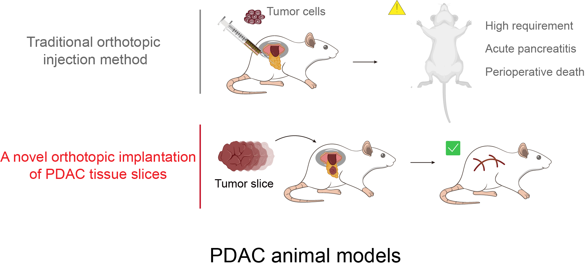

Pressure directed evolution
Heterogeneity lies in different individuals of the same species. When in a certain state of stress, individuals who are more adapted to the environment will have a greater probability of survival and reproduction, which is reflected in the evolution of population to a certain phenotype in terms of population size. In a similar way, based on the concept of molecular directed evolution, after artificially inducing massive genetic mutation in Nature Killer (NK) cells, we applied the referred orthotopic PDAC model to offer them a tumor-bearing environment pressure. The NK cells which have the strongest viability and biological function were then selected, completing an artificial evolution targeting anti-tumor efficacy.
CRISPR Screen
The clustered regularly interspaced short palindromic repeats (CRISPR) system was first discovered in bacteria as an effective means to resist virus invasion. Cleverly modified, now it can be used for gene edit, namely, under the guidance of guide RNA (gRNA), targeting regions in the genome and cutting DNA, to achieve gene knockout. By regulating the biological activity of cas9, CRISPR activation and interference systems can up-regulate or silence the expression of specific genes in target cells. Bases on this technology, we employed a Gain-of-Function (GOF) dgRNA library to conduct genome-scale activation screening.
Our Model
Pancreatic ductal adenocarcinoma (PDAC) is a common malignant tumor pathological type of pancreatic cancer, with a five-year survival rate of 12%. Due to the immunosuppressive tumor microenvironment (TME), the strategy of "neoadjuvant therapy" is constantly refined. To reach the surgical criteria, we can utilize targeted drugs or immunotherapy to kill some tumor cells in advance. Immune cells, such as NK cells, T cells and macrophages are all of vital importance.
In order to meet research needs, several PDAC animal models have been described, including the heterotopic and orthotopic ones. For the simplification and success rate, heterotopic flank tumors are frequently used, but the anatomical position effect should be given enough concern. The traditional orthotopic injection method not only requires high quality operation, but may also results in acute pancreatitis and even perioperative death. In our project, we applied a novel orthotopic implantation of PDAC tissue slices that could simulate the real TME relatively stable and reduce the failure rate of surgery.
Reference
1 SIEGEL R L, MILLER K D, WAGLE N S, et al. Cancer statistics, 2023 [J]. CA Cancer J Clin, 2023, 73(1): 17-48.
2 SPRINGFELD C, FERRONE C R, KATZ M H G, et al. Neoadjuvant therapy for pancreatic cancer [J]. Nat Rev Clin Oncol, 2023, 20(5): 318-37.
3 HERBERMAN R B, NUNN M E, LAVRIN D H. Natural cytotoxic reactivity of mouse lymphoid cells against syngeneic acid allogeneic tumors. I. Distribution of reactivity and specificity [J]. Int J Cancer, 1975, 16(2): 216-29.
4 KIESSLING R, KLEIN E, WIGZELL H. "Natural" killer cells in the mouse. I. Cytotoxic cells with specificity for mouse Moloney leukemia cells. Specificity and distribution according to genotype [J]. Eur J Immunol, 1975, 5(2): 112-7.
5 SPITS H, ARTIS D, COLONNA M, et al. Innate lymphoid cells--a proposal for uniform nomenclature [J]. Nat Rev Immunol, 2013, 13(2): 145-9.
6 LIU D F, BRYCESON Y T, MECKEL T, et al. Integrin-Dependent Organization and Bidirectional Vesicular Traffic at Cytotoxic Immune Synapses [J]. Immunity, 2009, 31(1): 99-109.
7 COOLEY S, HE F, BACHANOVA V, et al. First-in-human trial of rhIL-15 and haploidentical natural killer cell therapy for advanced acute myeloid leukemia [J]. Blood Adv, 2019, 3(13): 1970-80.
8 WANG J, JENSEN M, LIN Y, et al. Optimizing adoptive polyclonal T cell immunotherapy of lymphomas, using a chimeric T cell receptor possessing CD28 and CD137 costimulatory domains [J]. Hum Gene Ther, 2007, 18(8): 712-25.
9 QUINTARELLI C, SIVORI S, CARUSO S, et al. Efficacy of third-party chimeric antigen receptor modified peripheral blood natural killer cells for adoptive cell therapy of B-cell precursor acute lymphoblastic leukemia [J]. Leukemia, 2020, 34(4): 1102-15.
10 WANG X, JASINSKI D L, MEDINA J L, et al. Inducible MyD88/CD40 synergizes with IL-15 to enhance antitumor efficacy of CAR-NK cells [J]. Blood Adv, 2020, 4(9): 1950-64.
11 LI R, JOHNSON R, YU G, et al. Preservation of cell-based immunotherapies for clinical trials [J]. Cytotherapy, 2019, 21(9): 943-57.
12 PARIHAR R, RIVAS C, HUYNH M, et al. NK Cells Expressing a Chimeric Activating Receptor Eliminate MDSCs and Rescue Impaired CAR-T Cell Activity against Solid Tumors [J]. Cancer Immunol Res, 2019, 7(3): 363-75.
13 ISHINO Y, SHINAGAWA H, MAKINO K, et al. Nucleotide sequence of the iap gene, responsible for alkaline phosphatase isozyme conversion in Escherichia coli, and identification of the gene product [J]. J Bacteriol, 1987, 169(12): 5429-33.
14 KNOTT G J, DOUDNA J A. CRISPR-Cas guides the future of genetic engineering [J]. Science, 2018, 361(6405): 866-9.
15 QI L S, LARSON M H, GILBERT L A, et al. Repurposing CRISPR as an RNA-Guided Platform for Sequence-Specific Control of Gene Expression [J]. Cell, 2013, 152(5): 1173-83.
16 KOMOR A C, KIM Y B, PACKER M S, et al. Programmable editing of a target base in genomic DNA without double-stranded DNA cleavage [J]. Nature, 2016, 533(7603): 420-4.